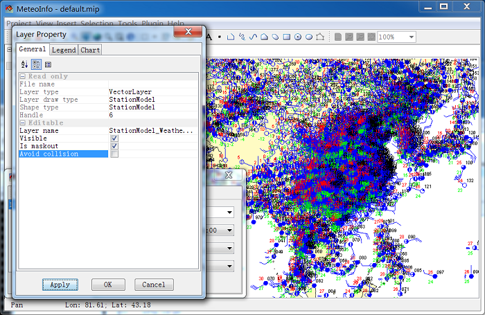

Open a station data set (such as MICAPS1 data), and select ‘DrawType’ as ‘Station_Model’. After press ‘Draw Data’ button, the station model graphic is presented.

The ‘AvoidCollision’ property was set to ‘True’ automatically when the station model layer was created to avoid the overlap of the station model symbols. When the map was zoomed in or zoomed out, more or less detailed stations were plotted automatically.
If ‘AvoidCollision’ is set to ‘False’, all stations in the map extent will be plotted.
